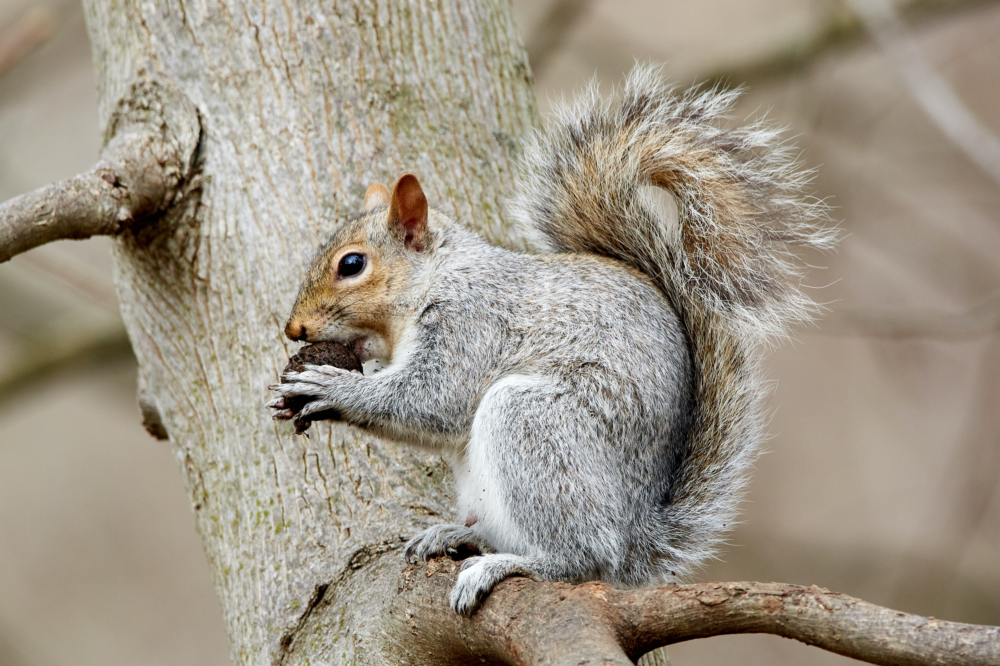
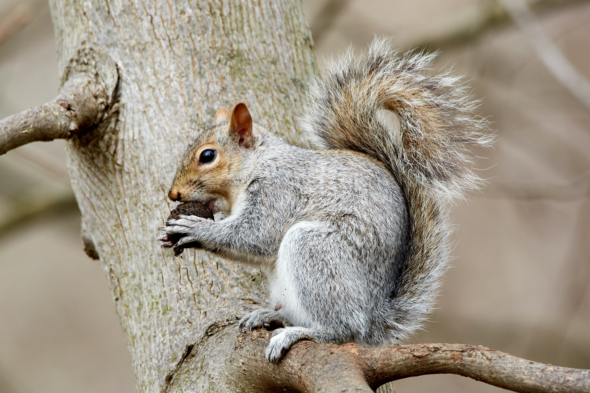

Squirrel Symbolism
- • What will the next year be about? What do you envision?
- Hoping to get another promotion to a lead role.
- • What lessons do you want to learn?
- I want to gain my PMP certification this year.
- • What things do you want to earn?
- Gain another investment property in rural areas of Wisconsin. Possibly manage an AirBnB property.
- • What are the things you can afford to lose?
- No TV or Movies for this year.
- • What are the skills you hope to gain?
- I want to learn how to do metalwork.
- • What will you take with you from this year?
- I want to make sure that my family would be able to visit me here in Wisconsin.
- • What is your wish for the year?
- I wish that I can gain more followers in my social media accounts to promote real estate, etc.
- • What is your favorite dish?
- My favorite dish will be filipino dishes.
- • Make yourself a fortune based on *this* year.
- Our deeds determine us, as much as we determine our deeds.
- • What would you call this year? The year of the ---
- The year of the Squirrel.
 
